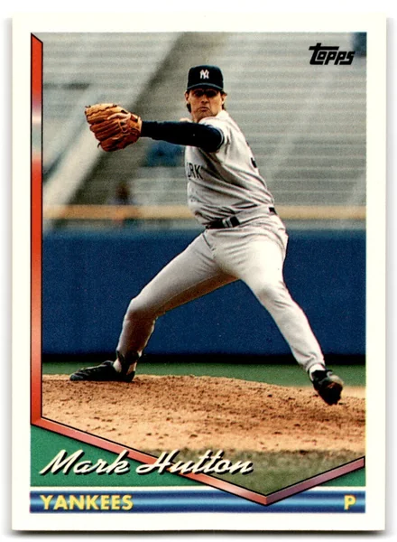

Mark Hutton
Career Highlights & Facts
(Facts are AI-generated and may require verification)
- Became the first Australian-born pitcher to appear in a Major League Baseball game.
- Recorded a career-high 54 strikeouts during the 1996 season.
- Pitched for five different organizations across a six-year major league career.
Would you like to find out more about Mark Hutton?
Career Totals
| WAR | W | L | ERA | G | GS | SV | IP | SO | WHIP |
|---|---|---|---|---|---|---|---|---|---|
| 0.9 | 9 | 7 | 4.75 | 84 | 18 | 0 | 189.2 | 111 | 1.576 |
Statistics via Baseball-Reference.com
The Original Clue